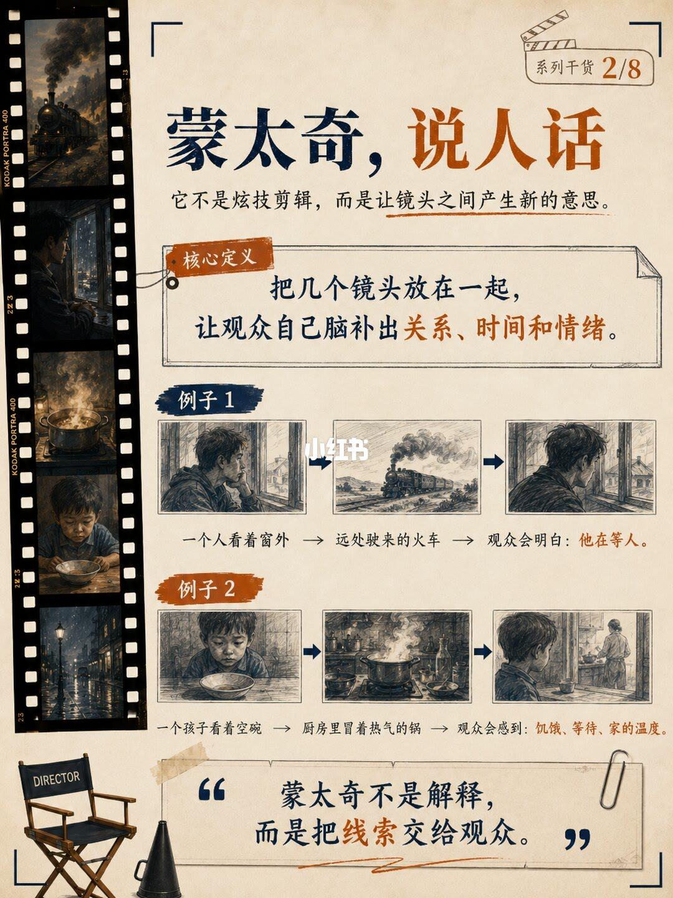
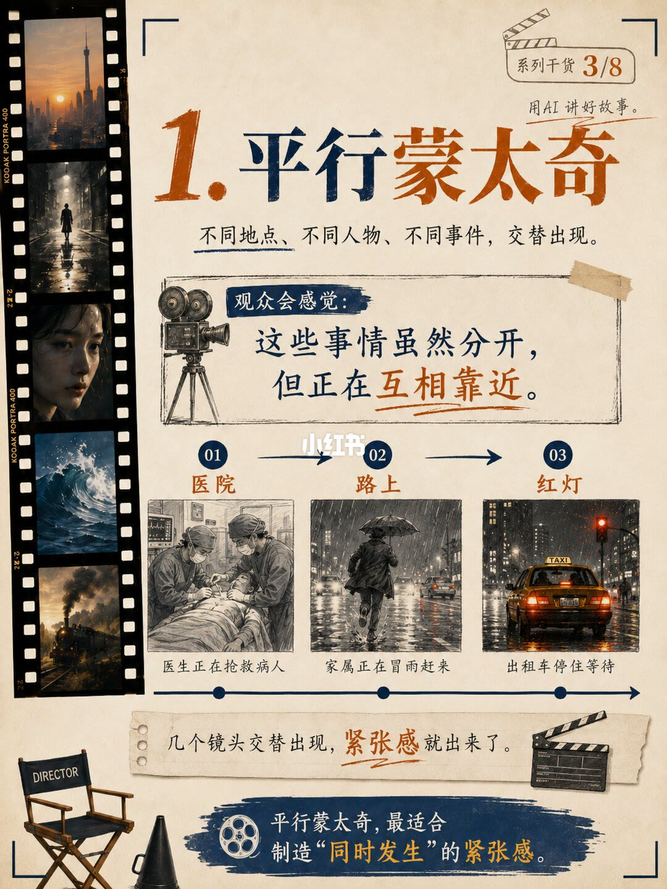
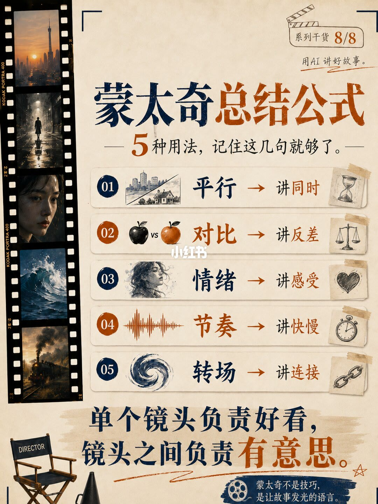

图文实录 · 小红书 · 老陈Ai实践笔记
8 张图带你了解最常用的 5 种蒙太奇
五种是平行、对比、情绪、节奏、转场。意思不在单镜头好不好看，而在镜头之间让观众自己补上关系、时间和感受。
1/8
先报五种
系列 1/8，副题「用 AI 讲好故事」。标题是 AI 短片最常用的 5 种蒙太奇。口号写：质量不是拼了多少镜头，真正的蒙太奇是镜头之间产生意义。五种：平行，多线一起推进；对比，反差碰撞出主题；情绪，调动感受；节奏，用快慢引导观看；转场，把不同时空接顺。页底：剪辑决定怎么看，蒙太奇决定怎么懂。
2/8
说人话
系列 2/8。蒙太奇不是炫技剪辑，是让镜头之间产生新意思。定义：几个镜头放在一起，让观众自己脑补关系、时间和情绪。例子一：人看窗外，再切远处驶来的火车，观众会懂他在等人。例子二：孩子看空碗，再切厨房冒热气的锅，观众感到饥饿、等待和家的温度。页底：蒙太奇不是解释，是把线索交给观众。

3/8
平行
系列 3/8。不同地点、人物、事件交替出现。观众会觉得这些事虽然分开，但正在互相靠近。例子：医院里医生抢救，路上家属冒雨赶来，出租车停在红灯前。几个镜头一交替，紧张感就出来。页底：最适合制造「同时发生」的紧张。图上没有写这三件事是否真的同时。

4/8
对比
系列 4/8。把差异很大的两个镜头放在一起，用反差制造意义。一边是高档餐厅里碰杯，一边是清洁工蹲在路边吃冷饭。另一组：年轻时在球场奔跑，多年后拄拐站在看台边。单独看都是日常，放在一起意思就变了。页底：不靠说教，靠反差刺一下，让观众自己填两镜之间的空白。
5/8
情绪
系列 5/8。不直接讲剧情，先把感受压出来。有些镜头不是交代剧情，是把情绪慢慢堆起来。考试前的五格：笔尖停住、手心出汗、钟表跳动、树叶被风吹、脚步声越来越近。单看都小，拼在一起紧张感出来。页底：不说情绪，但每个镜头都在压情绪。
6/8
节奏
系列 6/8。快慢不同，观感完全不一样。快切例子是拳击：出拳、汗、观众站起、对手倒地，旁边是秒表。慢切例子是老门推开、灰尘在光里、发黄的照片、手按在木桌上，旁边是沙漏。同一组镜头，切得快是冲击，切得慢是重量。两条收束：不是越快越高明，节奏要有呼吸；快切给冲击，慢切给重量。
7/8
转场
标题是让镜头切得顺，别像被硬拽过去。五种接法：运动方向一致更顺；构图相近更自然；用遮挡藏住切换；颜色过渡更柔；动作接动作更连贯。例子一用遮挡：关上卧室门，经过全黑，再打开办公室的门。例子二用相似形状：咖啡旋涡转到城市环形立交。页底：关键不是花，是让观众觉得不是被切过去，而是被带过去。
8/8
五句口诀
系列 8/8。平行讲同时，对比讲反差，情绪讲感受，节奏讲快慢，转场讲连接。大字：单个镜头负责好看，镜头之间负责有意思。片尾：蒙太奇不是技巧，是让故事发光的语言。这是笔记的收束，不是定义。

汇总
先让观众补意思，再选一种接法
第 2 页是总原则：不解释，把线索交出去。第 3 到第 7 页各给一种：同时发生、反差、堆细节、快慢、顺着带走。第 8 页把它们收成五句。左边反复出现的城市、巷子、人脸、海浪和火车是装饰片，没有被写成某一种蒙太奇的例证。这是给 AI 短片用的分镜口诀，没有秒数和软件步骤。